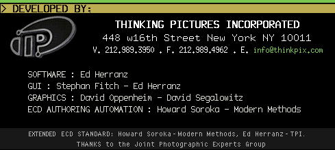

Audio
The disc lists eleven album tracks in its own AUTORUN.INF. It is an
Enhanced CD (CD Extra): the songs play from the audio session of the CD, which a data
archive cannot contain. No audio files are shipped with this card.
Video
Movies/Sonne.MPG
(MPEG-1, 352×240, 4:00). The player above uses a labelled H.264/AAC transcode for the
browser; the original file is one of the card downloads.
Connect
The disc's AUTORUN.INF lists three historical web addresses. They belong to
2001 and were not archived or checked: this preview shows them exactly as the disc
stored them and does not open them.
Help/Prefs

The Universal Media Player 0.30 was written by Thinking Pictures, Incorporated of New York (© 1997) for Universal Music's Enhanced CDs. It requires Windows 95 and a separate QuickTime or Media Player for video. It is preserved here as a download and is not run in the browser; this page is a rebuild of its window from the disc's own bitmaps and metadata.
The player's generic manual, extracted from ReadThis.WRI:
This page is not the original program. It rebuilds the Universal Media Player window from
the disc's own files — the album artwork, the toolbar and credits bitmaps taken from
ump.exe, the track list from AUTORUN.INF and the manual from
ReadThis.WRI. The original Windows program and the untranscoded Sonne video are
among the card's downloads.